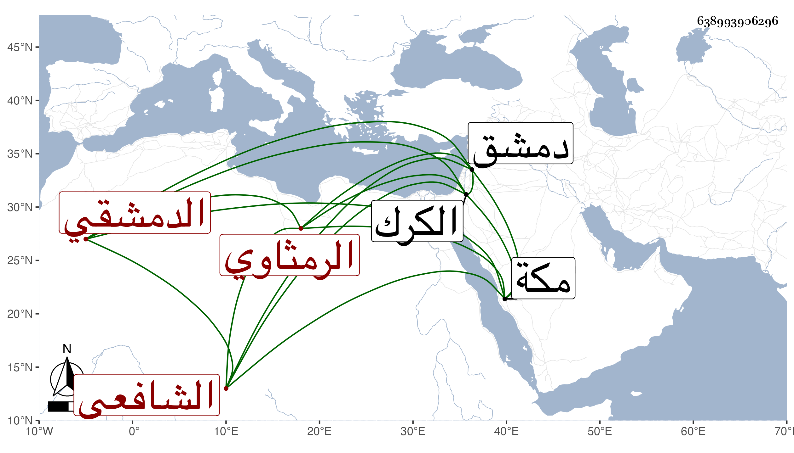

0902Sakhawi.DawLamic.ITO20230111-ara1.EIS1600.638993906296
Biography ID: 638993906296
757
موسى بن أحمد بن موسى الشهاب الرمثاوي ثم الدمشقي الشافعي . ولد سنة ستين تقريبا ولازم الشرف الغزي حتى أذن له في الإفتاء وكذا أخذ بمكة عن ابن ظهيرة وأخذ الفرائض عن المحب المالكي وفضل فيها وطرفا من الطب عن الرئيس جمال الدين وكتب بخطه ومهر وتعانى الزراعة ثم تزوج ابنة شيخه الشرف وماتت معه فورث منها مالا ثم بذل حتى ناب في الحكم بل ولي قضاء الكرك سنة أربع عشرة ، وصاهر الأخنائي وامتحن مرة . قال ابن قاضي شهبة في تاريخه كان سيئ السيرة عنده دهاء فتح أبوابا من الأحكام الباطلة فاستمرت بعده . مات بدمشق في ربيع الأول سنة ست عشرة ويقال إنه سم . ذكره شيخنا في إنبائه .
